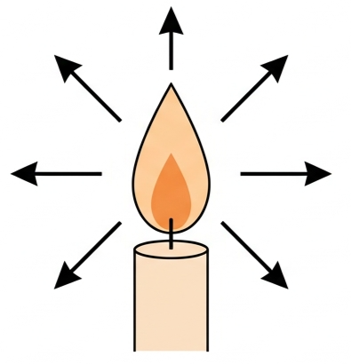
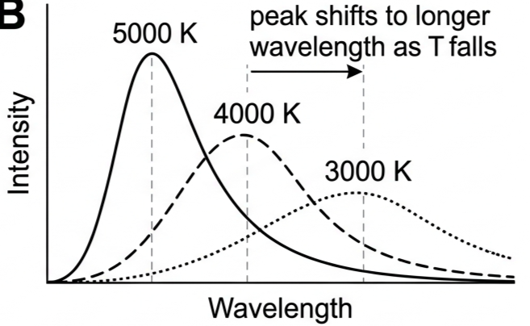
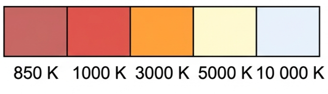
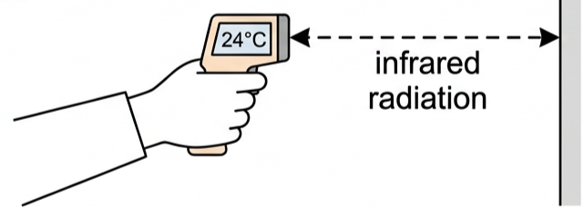
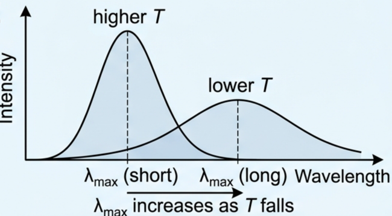
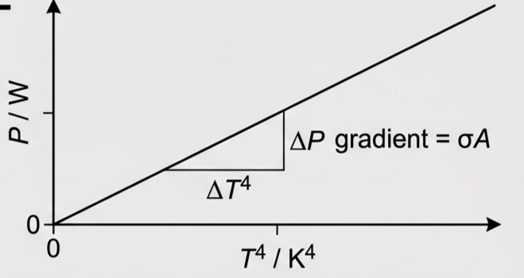
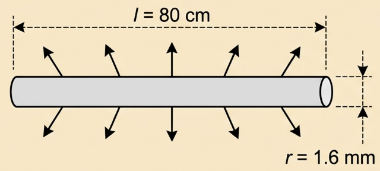

🌌 Hook – a star's hidden message
Look at the night sky. Stars appear in different colours — some red, some blue, some white. Red stars are relatively cool (about 3000 K); blue stars are incredibly hot (over 30 000 K). The colour of a star tells you its temperature, even though it sits trillions of kilometres away and you can never touch it or hold a thermometer to it.

🔥 What is thermal radiation?
Thermal radiation is electromagnetic radiation emitted by all matter at all temperatures, due to the movement of charged particles within atoms. Unlike conduction and convection, it needs no medium — it crosses empty space, which is how the Sun's energy reaches Earth.
| Characteristic | Detail |
|---|---|
| Always emitted | All matter emits radiation at all temperatures, not just when hot |
| Frequency varies | Depends on temperature — higher T gives higher frequency |
| Wavelength range | Mostly infrared at room temperature; visible only at high temperature |
| No medium needed | Travels through vacuum, unlike conduction or convection |
⚖️ Three factors that control radiated power
The power a surface radiates depends on three things.
1 · Surface temperature. Power is proportional to the fourth power of absolute temperature — this is the Stefan-Boltzmann relationship. A bar at 600 K radiates \((600/300)^4 = 2^4 = 16\) times more than the same bar at 300 K.
2 · Surface area. Power is proportional to area — this is why radiators have fins, and why elephants have large ears for heat loss.
3 · Nature of the surface. Good absorbers of radiation are good emitters; poor absorbers are poor emitters. White or shiny surfaces reflect most incident radiation, so they absorb poorly — a white building like an opera-house roof stays cooler in the sun because it reflects rather than absorbs radiation, and for the same reason it radiates heat away poorly too.
⬛ Black bodies – the perfect absorber and emitter
A perfect black body is an idealised object that (1) absorbs all electromagnetic radiation falling on it, (2) emits the maximum possible thermal radiation at any given temperature, and (3) reflects none — it would be invisible unless hot enough to glow.
| Object | Why it approximates a black body |
|---|---|
| The Sun | Almost perfect emitter, T ≈ 5800 K |
| Very hot dull/dark objects | Dark surfaces are good emitters |
| Water | Good absorber — oceans and lakes look dark from space |
| Human skin | A good approximation, regardless of visible pigment |
| Ice, soil, vegetation | Good absorbers of infrared |

🌡️ Colour and temperature
The black-body spectrum explains why heating an object makes it change colour in a predictable order: it starts glowing dull red, then red, then orange, yellow-white, and finally blue-white at extreme temperatures.
| Temperature | Peak wavelength | Colour | Example |
|---|---|---|---|
| ~850 K | ~3.4 × 10⁻⁶ m | Dull red | Heated metal starting to glow |
| ~1000 K | ~2.9 × 10⁻⁶ m | Red | Betelgeuse |
| ~3000 K | ~9.7 × 10⁻⁷ m | Orange-red | — |
| ~5000 K | ~5.8 × 10⁻⁷ m | Yellow-white | The Sun |
| ~10 000 K | ~2.9 × 10⁻⁷ m | Blue-white | Sirius |

📐 Wien's displacement law
The wavelength at which a black body radiates most strongly is fixed once you know its temperature.
Skin at ~35 °C (308 K) has \(\lambda_{\text{max}} = 9.4 \times 10^{-6}\) m — infrared, invisible to the eye. This is why thermal cameras can detect people in the dark.
🔆 The Stefan-Boltzmann law
where \(\sigma = 5.67 \times 10^{-8}\ \text{W m}^{-2}\text{K}^{-4}\) is the Stefan-Boltzmann constant. For a star, the total power radiated is called its luminosity:
A body surrounded by cooler surroundings also absorbs radiation from them, so the useful quantity is the net power lost:
A surface at 100 °C (373 K) surrounded by 20 °C (293 K) air emits \(\sigma T^4 \approx 1.1\) kW m⁻² but absorbs back \(\sigma T_{\text{s}}^4 \approx 0.42\) kW m⁻², for a net loss of about 0.68 kW m⁻².
✨ Stars: apparent brightness and the inverse square law
Luminosity (L) is the total power a star actually emits. Apparent brightness (b) is the power received per unit area here on Earth — and it depends on distance as well as luminosity, because the same total power spreads out over an ever-larger sphere of area \(4\pi d^2\) as it travels.
Two equally bright-looking stars can have wildly different luminosities if they sit at different distances — brightness alone never tells you how luminous a star really is.
\(= 3.8 \times 10^{3}\ \text{W}\).
🕯️ Standard candles – measuring cosmic distances
Henrietta Swan Leavitt discovered in 1908 that Cepheid variable stars — stars whose brightness varies periodically — have a fixed relationship between their period of variation and their luminosity: longer period means greater luminosity. That relationship makes them a standard candle: measure the period, read off L, measure b, then solve \(b = L/(4\pi d^2)\) for the distance.
A light year is the distance light travels in one year: \(1\ \text{ly} = (3.00\times10^8)(365\times24\times3600) = 9.46\times10^{15}\) m. The nearest star, Proxima Centauri, is 4.25 ly away.
📈 Graphs every examiner uses
| Graph type | Axes (X, Y) | Shape | What to read |
|---|---|---|---|
| Black-body spectrum | Wavelength / m · Intensity | Bell-shaped curve; peak shifts left as T rises | λmax from the peak; area under the curve ∝ total power |
| Wien's law | T / K · λmax / m | Decreasing curve (inverse proportion) | λmax T = 2.9 × 10⁻³ m K, constant along the curve |
| Stefan-Boltzmann | T⁴ / K⁴ · P / W | Straight line through the origin | Gradient = σA |
| Apparent brightness vs distance | d / m · b / W m⁻² | Decreasing curve (inverse square) | Halving d gives 4× the brightness |


✍️ Worked example 1 – Wien's law (B1.5)
Determine the temperature of a surface emitting maximum power at a wavelength of \(5.8\times10^{-7}\) m.
\(T = \dfrac{2.9\times10^{-3}}{5.8\times10^{-7}}\)
✍️ Worked example 2 – a radiating wire (B1.4)
A metal wire at 632 °C, length 80 cm, radius 1.6 mm, behaves as a perfect black body. Calculate the total power it radiates.
\(= 8.04\times10^{-3}\ \text{m}^2\)
\(P = \sigma A T^4\)
\(\approx 3.1\times10^{2}\ \text{W}\) — even a thin wire radiates hundreds of watts when hot.

✍️ Worked example 3 – distance to a star
A star has luminosity \(126\,000\ L_{\text{sun}}\) and apparent brightness \(1.4\times10^{-7}\ \text{W m}^{-2}\). Find its distance from Earth.
\(d = \sqrt{\dfrac{L}{4\pi b}}\)
🌍 Real-world: seeing heat without touching it
A handheld infrared thermometer detects the infrared radiation a surface emits, assumes the surface behaves as a black body, and calculates temperature from the detected power. Its readings depend on distance and on the assumed emissivity of the surface being measured.

🚀 HL extension – how much hotter to double the output?
Because power depends on \(T^4\), only a small temperature rise is needed to double it. Take an object at 25 °C (298 K):
Challenge: what temperature doubles the radiated power? Answer: \(T_2 = 298\times2^{1/4} = 354\) K = 81 °C — radiation only needs to rise from 25 °C to 81 °C to double.
⚠️ Trap corner – common mistakes
| Misconception | Correct view |
|---|---|
| Thermal radiation is only infrared | It spans the whole EM spectrum — visible, UV, IR and beyond — depending on temperature |
| Black bodies are always black | "Black" refers to perfect absorption; a black body glows visibly once hot enough |
| Hotter objects emit more of every wavelength equally | The peak shifts to shorter wavelengths (Wien's law); it isn't a uniform scale-up |
| The Sun is green | Its spectrum peaks near green/blue, but it appears white to the human eye |
| All stars are the same colour | Colour indicates surface temperature — red is cool, blue is hot |
| Apparent brightness alone tells you luminosity | Distance also matters: \(b = L/(4\pi d^2)\) |
| Radiation only comes from hot objects | All objects radiate at all temperatures — hot objects just radiate far more power |
Complete the statements:
✓ \(P = \sigma A T^4 = (5.67\times10^{-8})(1.8)(308)^4\).
✓ \(P \approx 900\ \text{W}\).
✓ \(\lambda_{\text{max}} = 9.4\times10^{-6}\ \text{m}\) (infrared).
✓ This is invisible to the eye but detectable by an infrared sensor, letting thermal cameras "see" people in the dark.
✓ This prevents radiant heat loss that would otherwise escape.
✓ The sheet also blocks wind, preventing heat loss by convection.
✓ A shiny surface is a poor emitter as well as a poor absorber, so it does not itself radiate the trapped heat away quickly.
✓ \(L = 3.9\times10^{26}\ \text{W}\).
✓ (b) The Sun appears white/yellow to the eye.
✓ Its spectrum actually peaks close to 500 nm, in the green/blue part of the visible range.
✓ (b) \(\lambda_{\text{max}} = \dfrac{2.9\times10^{-3}}{3500}\).
✓ \(\lambda_{\text{max}} = 8.29\times10^{-7}\ \text{m}\).
✓ \(1000 = (15000/5780)^4 \times \dfrac{A_{\text{star}}}{A_{\text{sun}}} = 45.4 \times \dfrac{A_{\text{star}}}{A_{\text{sun}}}\).
✓ \(\dfrac{A_{\text{star}}}{A_{\text{sun}}} = 22\) — the star's surface area is about 22 times the Sun's.
✓ \(I = 0.0596\ \text{W m}^{-2}\).
✓ (b) \(d = \sqrt{\dfrac{P}{4\pi I}} = \sqrt{\dfrac{4.1}{4\pi(0.40)}}\).
✓ \(d = 0.90\ \text{m}\).
✓ \(d = 7.65\times10^{20}\ \text{m}\).
✓ \(d = \dfrac{7.65\times10^{20}}{9.46\times10^{15}}\).
✓ \(d = 8.09\times10^{4}\ \text{ly}\).